I'm Ricky James, and I'm running for Oceanside City Council in District 2. I hope you take the time to read my About Me, some of my Priorities, My Pledge and keep track of the financial contributions throughout this race. Feel free to reach out if you have any questions or want to support what this campaign is all about.
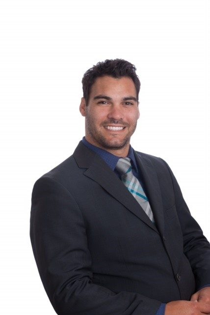
“Let's make Oceanside's potential a reality, together.”
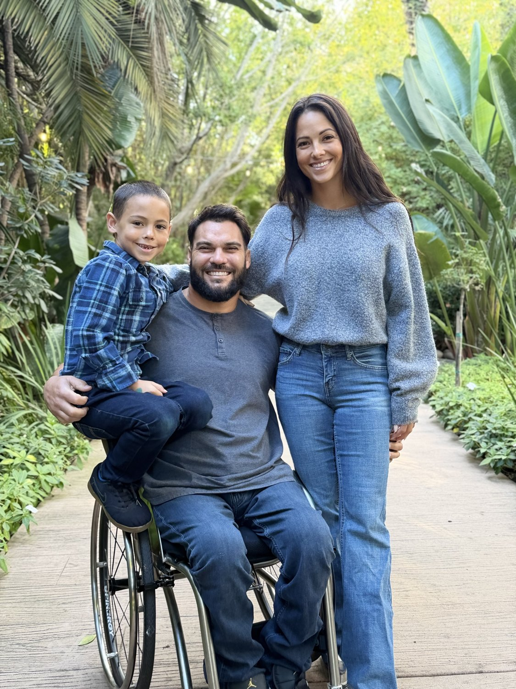
I am a 38 year old father, husband, son, brother. I was injured racing dirt bikes when I was 16 years old becoming a paraplegic. I have had to overcome some adversities in my life, but it has made me who I am today. I might not have dealt with them as I should have, but I am very grateful where my life has taken me. I now know I have the ability to serve my city in this capacity and there is no other motive other than being of service. I have not relied on a campaign manager, treasurer, or anybody to show me the ropes. I have worked very hard to figure out the system and it has been a great learning experience, something that I hope I can continue to do.
I'm not a career politician, and I won't pretend I'm the most qualified person in this city to sit on that dais. I'm not. But I am the best candidate this time. I take challenges head on and don't run from them because I can't run in the first place.
I identify as an Independent American because that's what I am. I didn't register Independent to hide anything. I'm not chasing both parties at the same time. I registered Independent because Oceanside City Council is a nonpartisan seat, and I intend to actually vote like it is, not carry water for a party, not chase endorsements from either side, and not let outside organizations or PACs tell me how to vote. I answer to District 2 residents.
I want this city to be the best possible city for young families to live in as well as compassionate to all seniors who love to live here even with the rising costs. We are a diversified city and no one should be left out. We will find solutions to make the potential of this city a reality if we work together.
Until November 3rd, I'll keep knocking on doors, keep showing up, and keep listening. This campaign isn't about me, it's about the neighbors who've stopped expecting City Hall to hear them. Let's make ourselves heard. Let's show how District 2 rolls.
— Ricky James
North and northeast Oceanside — North Valley, Morro Hills, Guajome, Arrowood, and the San Luis Rey River corridor. If you live here, I'm running to represent you.
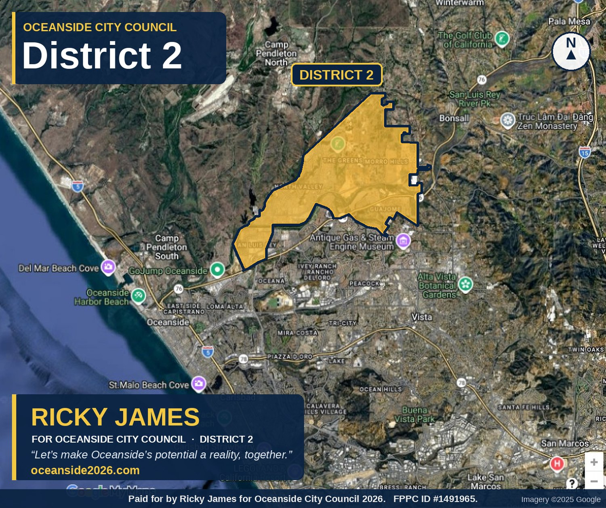
Oceanside City Council District 2 — adopted boundary (Finalist Map C).
From the River Trail to the harbor to our kids' ballfields — this is the Oceanside I'm fighting for.
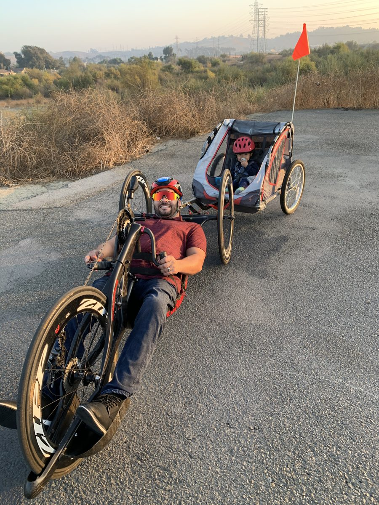
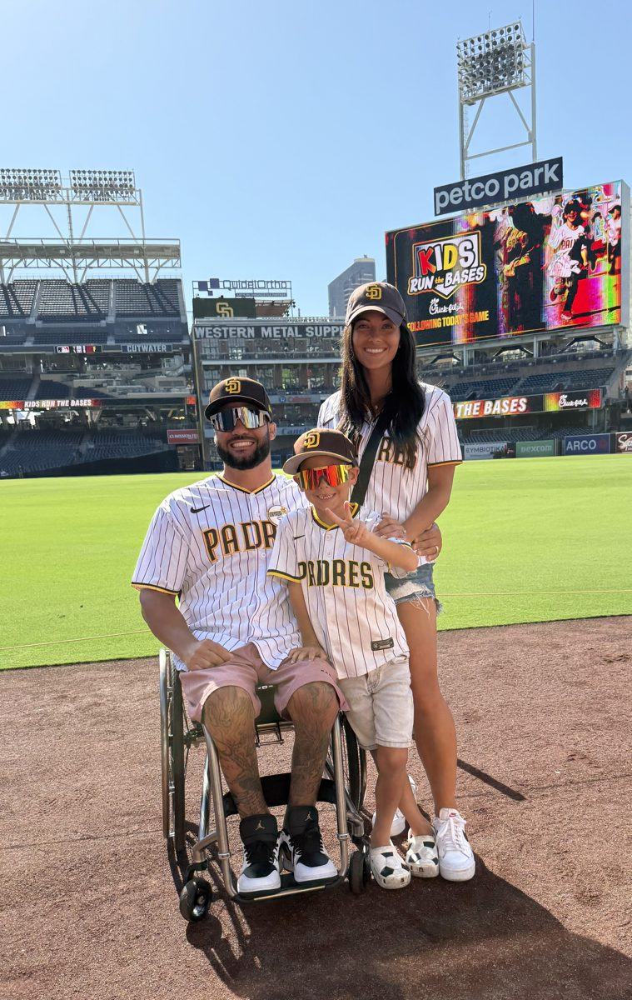
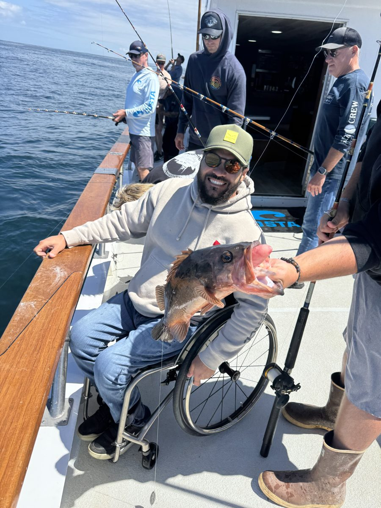
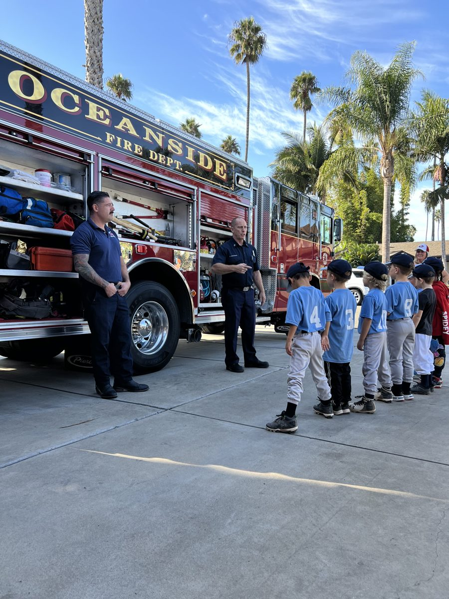
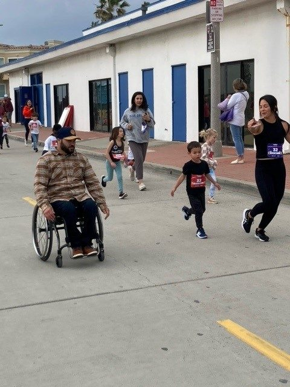
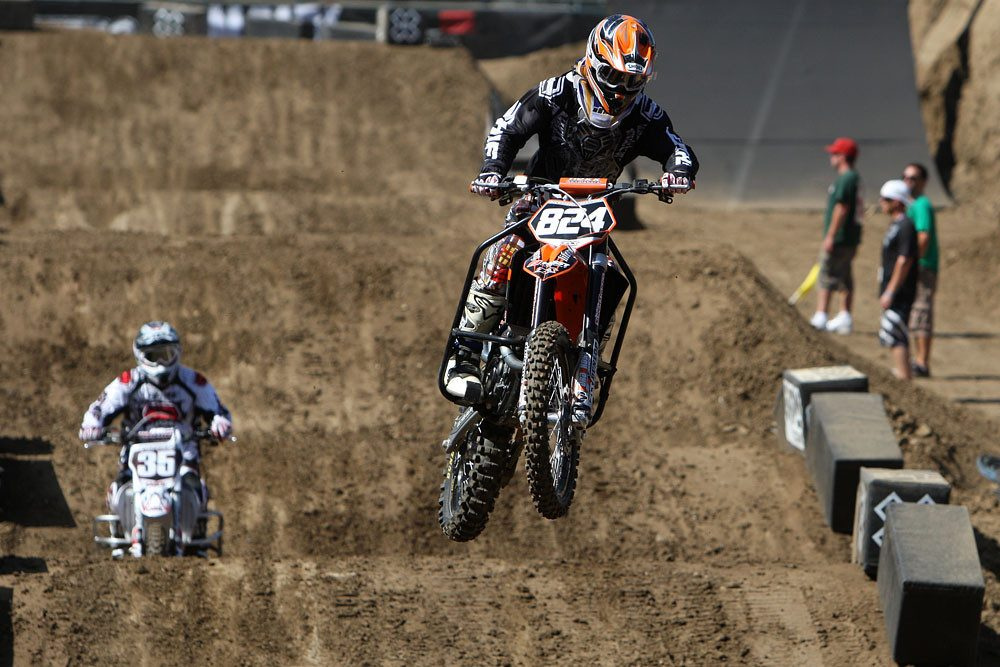
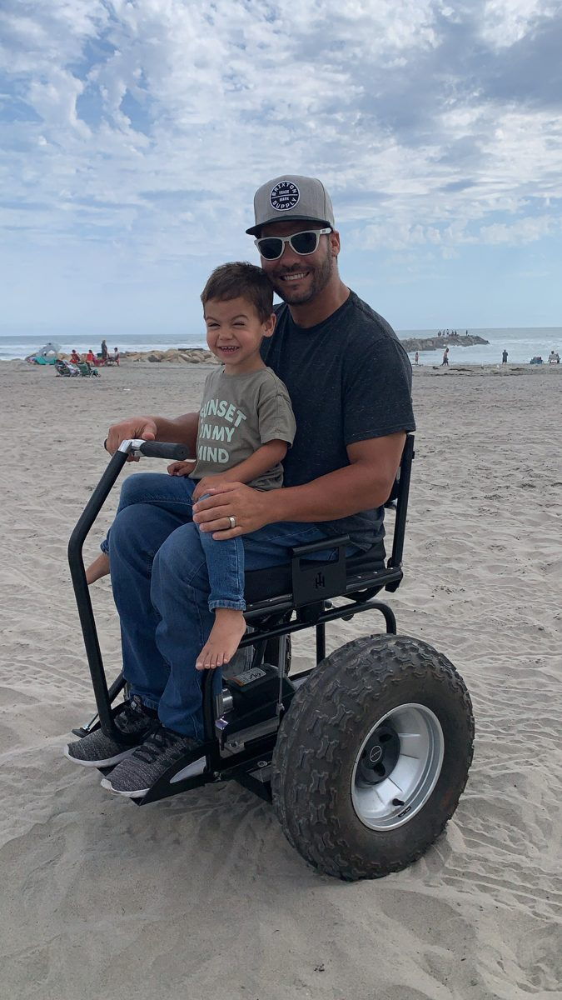
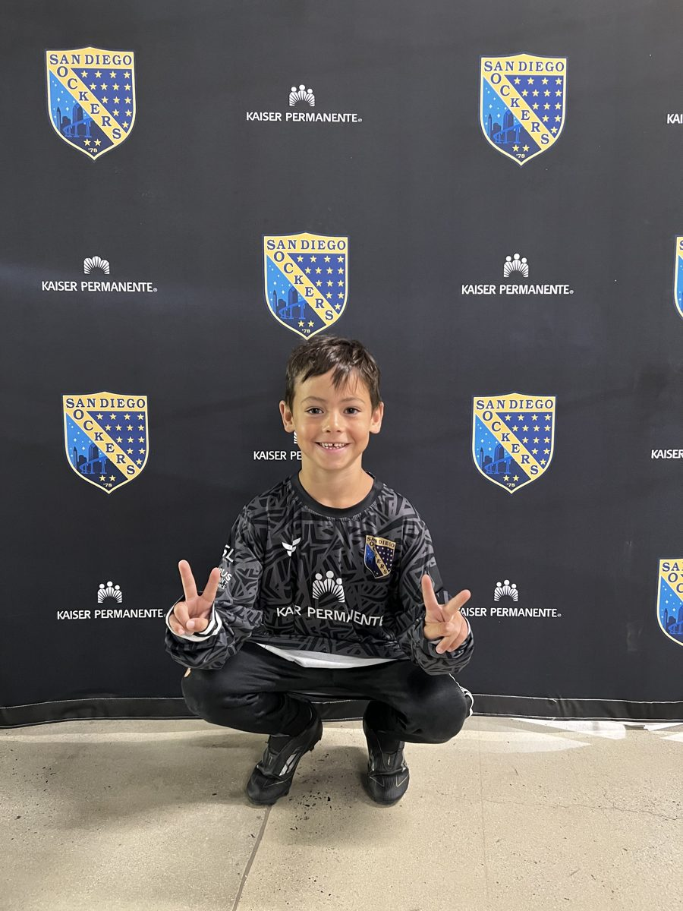
Real problems deserve real solutions — not empty promises. Here's what I'll fight for on day one.
I don't intend to be the councilmember residents read about for the wrong reasons. No conflicts of interest, no backroom deals, no party loyalty tests — just steady, independent judgment on behalf of residents.
The City's answer to years of budget strain is asking residents for a 0.5% sales tax increase. I think that's backwards — it hits young families and seniors on fixed incomes hardest, and it lets the City avoid fixing how it spends before asking residents for more.
Too many residents only hear from their councilmember at election time. I'll hold real office hours, show up where residents already are, and explain City decisions in plain language before they're made — not after.
I'm pro-growth — but growth that fits our roads, water, and services, not approvals rushed through because a developer asked first. The General Plan Update left South Morro Hills without its own Community Plan, and I'm committed to getting one established — so residents there have an actual, adopted plan for how the area grows, not decisions made project by project.
No other North County coastal city has what we have. We should treat these as the competitive advantage they are — maintaining them, showcasing them, and building our identity and economy around them:
Municipal politics should run on honest relationships and reasonable compromise that protects residents. My vow is simple: I won't solicit or accept money that comes with an agenda. That starts with developers seeking approvals and vendors chasing city contracts — but it doesn't end there. I'll hold the same hesitation toward activists, non-profit organizations, political parties, and PACs looking to advance an agenda through my seat. When I take my seat on the City Council, I'll answer to residents, not to whoever wrote the biggest check.
So how will I fund a campaign? With a strong message, efficiency, genuine relationships, and transparency — not a war chest. I want to stay as neutral and open-minded as possible, so I can offer the most rational and unbiased judgment on every decision that comes before me. I'll treat my campaign's finances the way I'll treat the City's: carefully, efficiently, and strategically. Money alone won't always solve a problem — motive, discernment, and honesty are more effective.
I'm not asking for your money — I'm asking for your support. I hope to do what I set out to do on the strength of this community.
I wish giving could be anonymous, but the law requires it to be reported — just like my expenses. I want it that way. Transparency is the whole point.
If I ever recognize a contribution from a developer or anything that looks like a conflict of interest, I'll send it back so I can stay unbiased. And if you spot a possible conflict, please bring it to my attention so I can address it.
Pursuant to Article I.5, Section 2.1.70(d) of the Oceanside City Code and California Government Code Section 36516(f), I've formally notified the City Treasurer that I'm waiving part of my Council salary.
Oceanside Council compensation runs about $3,352 a month — $2,802.49 in base salary, plus roughly $350 for Community Development Commission meetings and about $200 for Harbor District meetings. I'll keep no more than $1,200; the remaining ~$2,152 every month goes, by law, to the General Fund for the City to use at its discretion.
Read the actual letter (PDF)I believe you have a right to know who's funding the people who represent you. Every contribution to every Oceanside campaign is public record — and you can look it up yourself in seconds.
Cash on hand: $26,145.21. This is Robinson's committee's ENTIRE fundraising history, not just this calendar year — his "Re-Elect Rick Robinson City Council 2026" committee filed its Form 410 on 03/06/2025, more than a year before mine, and had already raised $27,818.37 by the end of 2025. Pulled from all four of his Form 460s: 214600778, 215505013, 217118682, and 1050.
Cash on hand: $7,017.96. Gonzales's committee filed its Form 410 on 12/15/2025, about two and a half months before mine, so this is close to a calendar-year total — the only pre-2026 activity was $55 in seed contributions and the $1,000 loan in December 2025. Pulled from all three of her Form 460s: 215560084, 217113002, and 1049.
Cash on hand: $444.40. My $100 personal seed loan to the campaign has since been repaid in full. My committee didn't exist before this year, so this figure is already a true full-campaign total. Note: my most recent Form 460 (filed 09/20/26) shows the calendar-year monetary-contributions column unchanged from my last report even though I itemized $2,848.24 in new contributions this period — likely a data-entry slip on my part rather than the treasurer's, and I'm following up to see whether it needs an amendment. The total above reflects what's actually been raised.
We monitor the active District 2 candidates — Rick Robinson, Emily Gonzales, and my own committee — along with the PACs active in the race, capturing monetary and nonmonetary contributions, loans, and late-contribution reports as they post to the City of Oceanside's eFile system. The three committees didn't start on the same day: Robinson's opened 03/06/2025, Gonzales's opened 11/12/2025, and mine opened in 2026, so a fair comparison has to total each one's full history rather than just this calendar year — that's what's shown above. Robinson's committee carries $14,000 in outstanding candidate loans; Gonzales's carries a $1,000 loan from The Collective Consultancy (reported December 2025). Figures above are pulled from every Form 460 each committee has filed since it opened, through each candidate's most recent report (filed the week of September 20–24, 2026, covering the period through September 19, 2026).
My campaign has raised $3,623.24 since my committee was formed — including $500 from my parents, Rick and Tina James, $1,200 from a retiree in Huntington Beach, $1,000 from a small-business owner in Placentia, three new $100 gifts in late August, and a $250 in-kind podcast-ad donation. My $100 personal seed loan has since been repaid in full. I don't solicit contributions, and I pledge not to take money from developers, vendors, PACs, or any interest seeking to advance an agenda. Robinson's re-election committee, which has been raising money since March 2025, has reported $46,069.89 in total contributions received since it formed (including $14,000 in candidate loans). Gonzales's committee, open since November 2025, has reported $18,514.33 in total contributions received since it formed. All figures above come from every Form 460 each candidate's committee has filed to date.
Contribution amounts and dates are from public California Form 460 filings via the City of Oceanside's eFile system. Notes identify each contributor's publicly known business, role, or project before the City. 2022 totals are final/amended and stay fixed.
This is a small, close district — a handful of engaged neighbors genuinely decide who represents you.
You're not a drop in the bucket here — you're the margin.
Source: San Diego County Registrar of Voters, 2022 official results.